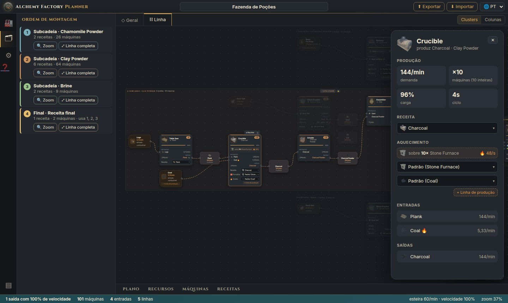
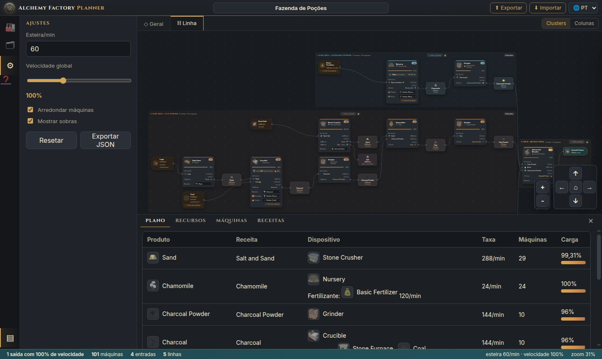
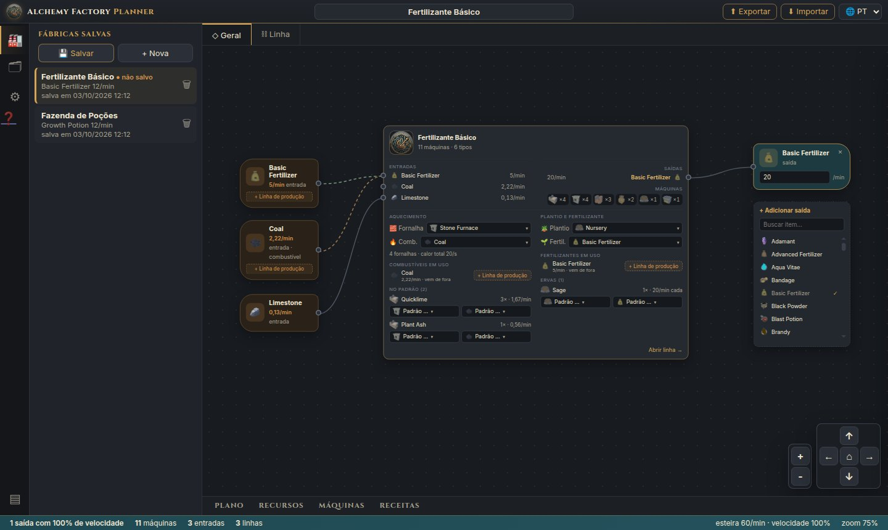

Como usar o Alchemy Factory Planner
O planner calcula quantas máquinas, esteiras, fornalhas, combustível e fertilizante a sua fábrica precisa para produzir o que você quer, e mostra a ordem para montá-la. Este guia passa por cada parte da ferramenta.
1 Início rápido
- Escolha o que produzir. Na aba ◇ Geral, use + Adicionar saída, busque o item e clique nele.
- Defina a meta. No nó da saída, digite quantos itens por minuto você quer.
- Veja a fábrica. Abra a aba ⛓ Linha para ver máquinas, esteiras e a ordem de montagem.
- Guarde. Clique em 💾 Salvar na barra lateral, ou compartilhe o link da página.
O app abre vazio. Tudo o que você monta fica no endereço da página (?fabrica=…), então recarregar não perde nada.
2 Conhecendo a tela
A tela é dividida em áreas fixas, com o diagrama da fábrica no centro.

- Barra de título
- Nome da fábrica (clique para editar), os botões ⬆ Exportar e ⬇ Importar e o seletor de idioma.
- Barra de atividades
- 🏭 fábricas salvas · 🗂 ordem de montagem · ⚙ ajustes · ❓ este tutorial · ▤ painel de tabelas. Clicar no ícone ativo recolhe a barra lateral.
- Abas
- ◇ Geral (visão de entradas e saídas), ⛓ Linha (todas as máquinas) e uma aba ▦ Linha … para cada bloco que você abrir.
- Barra de status
- Saídas, total de máquinas, entradas, linhas de esteira, velocidade e zoom.
Navegação no diagrama: arraste o fundo para mover, use a roda do mouse para dar zoom, os botões + − e as setas no canto, e ⌂ para enquadrar tudo.
3 Criar a fábrica (aba Geral)
A aba Geral mostra a fábrica como um bloco único: o que entra de fora à esquerda, o nó Fábrica no meio e as saídas à direita.
- Adicionar saída: no nó + Adicionar saída, busque e clique no item. Você pode ter várias saídas ao mesmo tempo.
- Meta: edite os itens/min diretamente no nó da saída. ✕ remove a saída.
- Nó Fábrica:
- Entradas: o que vem de fora, e em roxo os insumos produzidos aqui.
- Saídas e sobras.
- Os tipos de máquina com quantidades.
- Os padrões de aquecimento, plantio e fertilizante.
- Nome: clique no título no topo da tela para dar um nome à fábrica.
Clique no nó Fábrica (ou em Abrir linha →) para ir à aba Linha.
4 Fornalhas e combustível
Máquinas quentes (Crucible, Kiln, Athanor, Alembic, Iron Smelter…) ficam em cima de uma fornalha, uma por máquina física, e é a fornalha que queima o combustível.
- Padrão da fábrica: no nó Fábrica, em Aquecimento, escolha a fornalha (Stone ou Blast Furnace) e o combustível padrão.
- Escolha manual: cada máquina pode usar outra fornalha ou outro combustível, pelo seletor no próprio nó, no painel de detalhes ou na lista do nó Fábrica. A opção Padrão (…) volta a seguir o padrão. Mudar o padrão nunca altera as máquinas manuais.
- Linha de produção: por padrão o combustível vem de fora. Se ele for fabricável, + Linha de produção adiciona à fábrica a cadeia que o produz, e ✓ Linha própria a remove.
Ciclos: se a linha de um combustível precisa dele mesmo (ex.: Charcoal Powder queimado no Crucible que faz Charcoal), a linha produz também o que ela própria consome. A volta aparece como uma linha pontilhada roxa.
5 Plantio e fertilizante
Ervas podem ser plantadas de duas formas, escolhidas no nó Fábrica (padrão) ou em cada erva (manual):
| Nursery | Seed Plot | |
|---|---|---|
| Semente | Fica plantada, não é consumida | É consumida |
| Fertilizante | Consome continuamente | Não usa |
| Velocidade | Definida pelo fertilizante | Tempo da receita |
No Nursery, o fertilizante faz muita diferença. Exemplo com 24 Chamomile/min:
- Basic Fertilizer: 1 erva/min por Nursery, ou seja, 24 Nurseries e 120 fertilizantes/min.
- Advanced Fertilizer: 12 ervas/min por Nursery, ou seja, 2 Nurseries e 24 fertilizantes/min.
O fertilizante também pode ter + Linha de produção, como o combustível.
6 A aba Linha

- Nós: cada receita é um nó de máquina, com o ícone, a quantidade (
×10), a carga e as entradas e saídas por item. Entre duas máquinas fica o nó do item transportado, com a taxa e o número de esteiras. - Clusters ou Colunas (canto superior direito):
- Clusters separa a fábrica em blocos, um por ingrediente da receita final, mais um bloco para cada combustível ou fertilizante com linha própria.
- Colunas mostra um grafo único.
- Ordem de montagem (🗂): lista os blocos na ordem em que devem ser construídos, com 🔍 Zoom e ⤢ Linha completa.
- Blocos:
- Um clique dá zoom no bloco.
- ⊟ Recolher esconde o interior.
- O cadeado 🔒 trava a posição (padrão). Com 🔓 você pode arrastar o bloco e os nós.
- Destaque: passe o mouse sobre um nó para destacar o caminho dele até as entradas e as saídas.
7 Detalhes de uma máquina

O painel mostra:
- a demanda, as máquinas (exatas e inteiras), a carga e o ciclo da receita;
- a receita, a fornalha, o combustível e o fertilizante, todos editáveis;
- as entradas e saídas com as taxas.
Trocar algo recalcula a fábrica na hora. Se máquinas entram ou saem, elas piscam e um aviso resume a mudança.
8 Linha completa: máquinas e esteiras

⤢ Linha completa abre o bloco numa aba própria, mostrando a montagem física:
- Máquinas: cada máquina física é um nó (Grinder #1, #2…), com a sua carga. A máquina parcial aparece tracejada.
- Esteiras: cada esteira é um nó. 144/min com esteira de 60/min viram 3 esteiras de 48.
- Fronteiras do bloco: o que vem de fora aparece como entrada, e o que sai vai para o próximo bloco, o produto final ou as sobras.
Você pode abrir várias linhas ao mesmo tempo. Cada aba lembra o próprio zoom, e ✕ fecha.
9 Tabelas e ajustes

- Painel de baixo (▤ ou as abas):
- Plano: tabela de máquinas.
- Recursos: matérias-primas e sobras.
- Máquinas e Receitas: catálogos.
- Ajustes (⚙):
- capacidade da esteira (itens/min);
- velocidade global;
- arredondar máquinas para inteiras;
- mostrar sobras;
- Resetar e Exportar JSON.
10 Salvar e compartilhar

- Fábricas salvas (🏭):
- 💾 Salvar grava a fábrica no navegador (atualiza se ela já existe).
- + Nova começa uma fábrica vazia.
- Clique numa fábrica para abri-la, com as abas que estavam abertas. 🗑 exclui.
- Código: ⬆ Exportar gera um texto
AFP1.…com a fábrica inteira. ⬇ Importar recria a fábrica a partir dele. - Link: o endereço da página sempre contém a fábrica atual (
?fabrica=…). Mande o link para alguém abrir exatamente a mesma fábrica.
11 Como o cálculo funciona
Os dados de receitas, máquinas, calor e nutrientes vêm do Alchemy Factory Codex.
- Máquinas
- demanda ÷ produção por máquina (saída da receita × 60 ÷ tempo × velocidade). Com Arredondar, o total de cada receita é arredondado para cima uma única vez.
- Combustível
- (calor da máquina + calor da fornalha) × máquinas × 60 ÷ valor calorífico do combustível.
- Fertilizante
- ervas/min por Nursery = 60 × vazão do fertilizante ÷ nutriente da erva; fertilizante/min = ervas × nutriente ÷ valor do fertilizante.
- Esteiras
- taxa do item ÷ capacidade da esteira, arredondado para cima.
- Ciclos
- resolvidos por repetição até estabilizar; se não se sustentam, o consumo vem de fora e a fábrica avisa.
12 Dicas
- Escolha bem o combustível: o valor calorífico pesa muito. O Charcoal Powder vale 48 e o Coal 540, então um combustível fraco pode exigir dezenas de máquinas só para alimentar as fornalhas.
- Fertilizante: o Advanced reduz muito o número de Nurseries. Compare antes de decidir.
- Sobras: aparecem em vermelho tracejado. Elas indicam itens que você pode aproveitar em outra fábrica.
- Recarregar: se algo parecer desatualizado depois de uma atualização do app, recarregue com Ctrl+Shift+R.